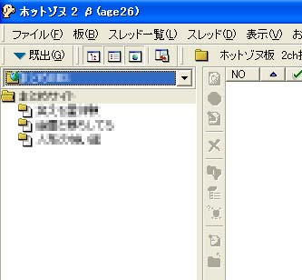

ホットゾヌ２での設定方法 ホットゾヌ２はzip形式で配布されます。ダウンロードしたファイルの中のhzb20というフォルダを適当な場所へコピーし、フォルダ内のhzb20.exeを実行します。hzb20.exeのショートカットをデスクトップ等に作っておくと起動が楽です。ダウンロード直後の状態では現在の２ちゃんねるの板一覧が取得できませんので、「板」メニューの「ボード一覧の更新」画面に出てくるURLをhttp://menu.2ch.net/bbsmenu.htmlに変更する必要が有ります。 ホットゾヌ２には、板１枚単位で登録する「BBSの登録ウィザード」と掲示板全体を登録する「BBSのセットアップ」の２種類の方法が有ります。ここでは「BBSのセットアップ」について説明します。 まず、ファイルメニューから「ＢＢＳのセットアップ」を選択して下さい。 ＢＢＳセットアップウィザードが出ますので「次へ」をクリックして下さい。 セットアップが終わりましたので「完了」ボタンをクリックします。 セットアップが完了すると、「ＢＢＳ選択」画面が出ますので、「<戻る」ボタンをクリックします。 「BBS_TITLE」というのが出てきますので、「このＢＢＳを閲覧対象にする」にチェックを入れて「ＯＫ」ボタンをクリックします。 掲示板を選択するリストボックスから「BBS_TITLE」が選択できるようになります。
「BBS_TITLE」を選択するとこの掲示板の内容が閲覧できるようになります。  板の追加や変更が有った場合には「板」メニューから「ボード一覧の更新」で取得できます。 レスの書き込み、新規スレ立て共に普通にできます。URL表示は現在の２ちゃんねるでは廃止された古い形式になりますが別に支障は有りません。 |